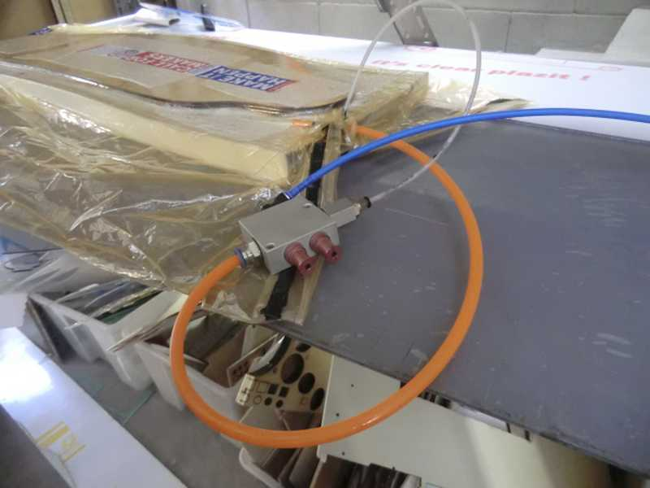

Exercise 12
22.04.2015
Composite Materials
Assignment
2 project:
How to make a longboard
How to make a surf
OhMyLong!
I have a personal project called OhMyLong! that is a derivate of Fab Skate by Luciano Bertoldi.During this week I tried to experiment a new technique.
Robot Arm
In Fablab Torino, we have a Comau robotic arm and we use it to experiment some artistic field with the arm like 3D print in ceramic and milling wood. This project is developed by Co-De-It, Officine Arduino and Fablab Torino. link to the project Digifab TouringWith Stefano Paradiso we tryng to make a longboard mold using the robot arm:
The Arm is controlled by a Grasshopper script that make and send directly a custom g-code to the arm
We mount a 12mm bit and we try to mill all the mold in one time

Here a video of the process during scanning myself
Shape
With Rhino I designed and cutted with laser the 3 brich wood layerGlue
using fiber and bicomponent epoxy resin mixed 1:20 I glued all the layer
Press
I put the sandwich in a vacuum bag with the particular spoonge fiber to absorb the resin and I made the vacuum with a Venturi valve instead the vacuum cleaner because with this valve I can use my 100L compressor to make the vacuum for many time with a low energy consumption

Color
when the shape is ready is possible to mask some parts and color the boardFinishing
With a gelcoat is possible to make the board woterproof an then is possible to stick the grip, trucks and wheelsand this is the final result:
Here you can download the longboard shape
Surf!
During the week 8 I made a surf board.Shaping
I started using a nylon pantyhose to make a smoothie shape but it wasn't goodSo I used a rubber fiber sheet that is unveiled perfect because it is useful to reinforce the pin and the tail of the board
On the sides I userd american tape to smooth the side shape
Resin
I covered the board with fiber covered by Epoxy resin mixed 1:2Customizing
Between the first and second layer I've insered a cartonboard logo